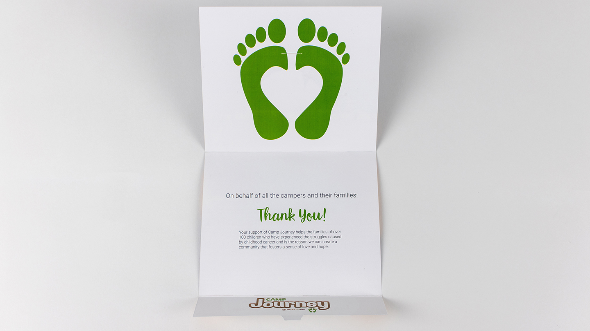
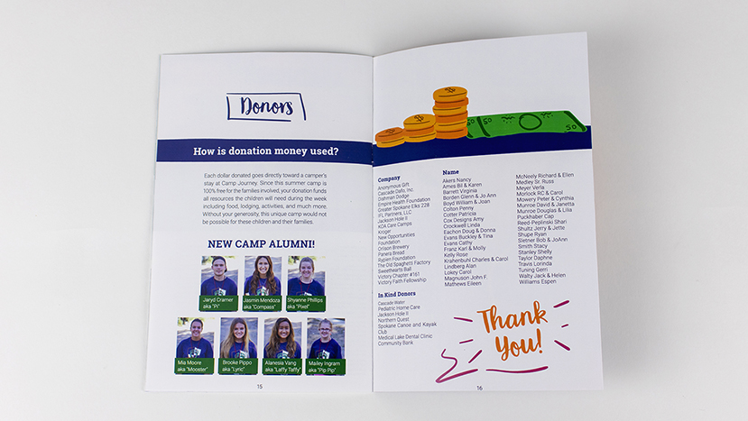

-

- 
- 
-
project objective
Create an appealing annual report that serves as both a traditional annual report as well as a way to advertise the camp.
target audience
Potential campers (children who have or have dealt with childhood cancer), stakeholders of camp journey (such as donors), the parents of potential campers, potential volunteers for the camp.
audience needs
Clearly communicated purpose, concise information, a product that fits the mood of a summer camp, a product that instills a sense of community and hope (the primary goal of Camp Journey).
deliverables
Printed saddle-stitched booklet and an independent thank you card for donors and volunteers.
my role
Layout and production.
-
insights
Camp Journey is a summer camp for children who are struggling with or have overcome childhood cancer. Those who run the camp do so to give the attending children “a chance to be a kid” among all of the physical and emotional stress of cancer treatment. This project was very open ended because I was allowed to take the visual style in any direction I wanted to as Camp Journey doesn’t have any distinct visual identity of its own when it comes to typefaces and color palettes. As a result, I was able to work in some illustrations and an interesting color progression throughout the book. At the start of the book (the front cover) you see an illustration of a forest scene in the day time, and at the back you see a sunset on the same hill.
The booklet transitions between these two gradually, showing the passage of time while also attempting to invoke the nostalgic feelings of a childhood Summer, where you spend your days playing and having fun and watch the sunset with your friends. The book contains various information about the year’s camp, such as a list of volunteers. It also contains information about getting your child to the camp and information for those looking to donate money. Some of this information is only addressed to one of the potential target audiences specifically. I created it with the children in mind; if it was visually appealing to them they might be more interested in attending the camp. The booklet also contains medical information for the parents of potential campers.
{kind=link}
{kind=link}
{kind=link}
{kind=link}
{kind=link}